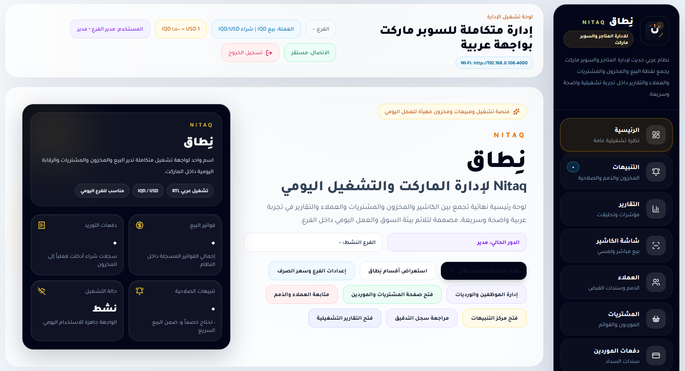
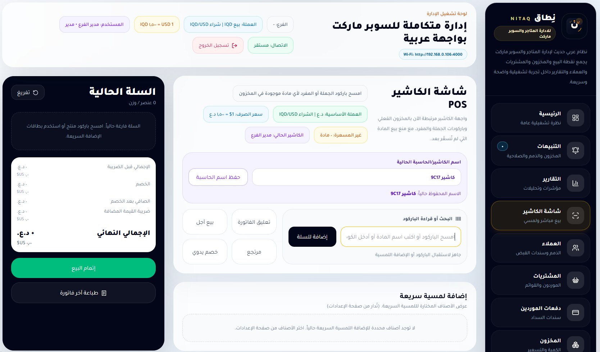
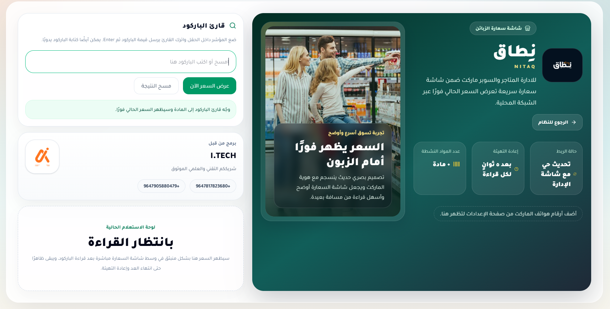
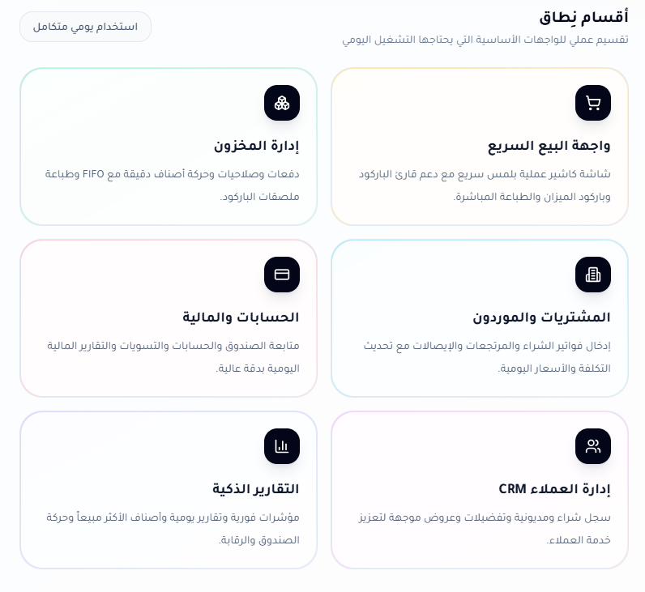

الواجهات
شاشات أقرب للكاشير والفرع من أي قالب عام.
تعرض هذه الواجهات نماذج من الشاشات الأساسية داخل نِطاق: اللوحة الرئيسية، التنبيهات، التقارير، شاشة الكاشير، وفاحص الأسعار.
لوحة تشغيلتنبيهاتتقاريرPOSفاحص أسعار
تعرض هذه الواجهات نماذج من الشاشات الأساسية داخل نِطاق: اللوحة الرئيسية، التنبيهات، التقارير، شاشة الكاشير، وفاحص الأسعار.
نماذج بصرية توضّح كيف تخدم كل شاشة جزءًا محددًا من دورة العمل داخل المتجر أو السوبر ماركت.

عرض نظيف للهوية وأقسام التشغيل والتنقل العام داخل النظام.

بحث وإضافة سريعة، سلة حالية، وإتمام بيع بطابع مباشر ولمسي.

واجهة واضحة لفحص السعر والبحث بالباركود أو اسم المادة.

تجميع بصري للأقسام الأساسية بدل تراص بطاقات جانبية غير مترابطة.
كل شاشة هنا مرتبطة بدور عملي واضح داخل المتجر أو السوبر ماركت.
اطلع على خبرة الجهة المطورة ونهجها في بناء أنظمة تشغيلية عربية تخدم السوق المحلي باحتراف.